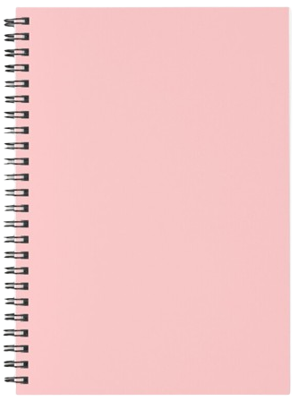

@marialuisa
Favorits: 25
Per preparar amb els meus nens

Pastissos varis

Magdalenes
★★★★☆

Brownies de xocolata
★★★★★

Galetes Farcides de Crema Lotus
★★★★☆
Magdalenes de xocolata (01/04/2025)
Perfecta per a un berenar amb amics.
Magdalenes de vainilla (02/04/2025)
M'ha encantat la recepta. No he tingut cap problema amb els ingredients!
Brownies de llimona (03/04/2025)
Aquest brownie és espectacular! Molt fàcil de fer, deliciós i, a més, sense sucre :0
Croissants amb maduixes (03/04/2025)
Aquesta no és tan bona...
Galetes de lotus (03/04/2025)
Perfecta per a un berenar amb amics.